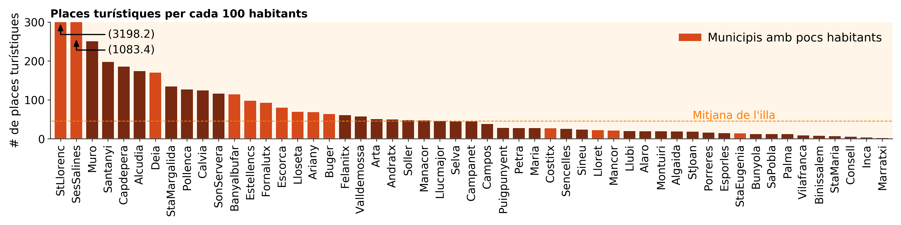
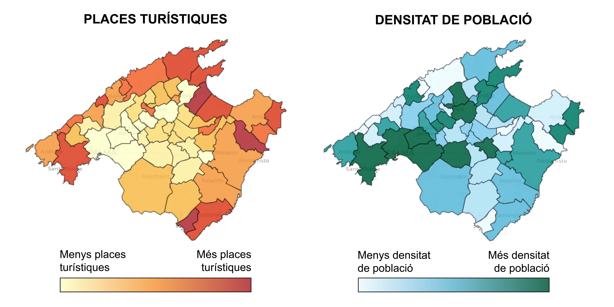
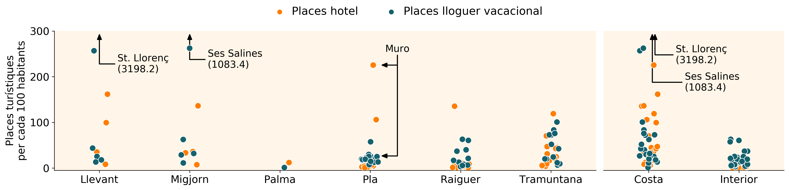

Aquest projecte pretén visualitzar la distribució de places turístiques a Mallorca.
La inspiració del projecte neix com a combinació entre una indignació post-estival i aquest tuit de n’Aina Ginard que mostra xifres de com es reparteixen les places turístiques pels diferents municipis. En el seu estudi, n’Aina subratlla que a Mallorca s’ofereixen 45 places turístiques per cada 100 habitants. El meu objectiu ha estat endinsar-me una mica més en el que s’amaga darrere aquesta xifra.
Les 45 places han estat calculades tenint en compte la població total de l’illa, així com les places turístiques de tot el territori. Per començar, basta posar el focus als municipis per veure que algunes zones ja superen (de molt) la mitjana de l’illa:

Poblacions com Sant Llorenç o Ses Salines mostren valors extrems donada la poca gent censada (~600 i ~900 persones respectivament). Tot i així, altres municipis més poblats com Alcúdia o Calvià mostren valors per damunt les 100 places turístiques per 100 habitant.
Per entendre millor la relació entre el nombre de places en un municipi i la seva població, val la pena tornar al mapa de l’illa:

El mapa de l’esquerra mostra (tal com va fer el tuit original) la distribució de places turístiques al territori. Es veu clarament com la oferta es concentren al litoral de l’illa.
El mapa de la dreta mostra com es reparteix la població als diferents municipis. Aquest mapa mostra com les àrees més densament poblades estan a l’interior de l’illa, concretament en els municipis que connecten Palma amb Alcúdia.
El contrast entre els mapes és facil de veure. Tret d’alguna excepció, els municipis més densament poblats son precisament els que tenen menys concentració de places turístiques.
Com que la densitat de població i places varia tant al voltant del territori, he volgut dividir l’illa en regions més facils de comparar. Per aixo m’he centrat en les diferents regions de Mallorca, així com en la diferència entre municipis de costa i interior. Finalment, en comptes de fixar-me en el total de places turístiques, he separat entre les places d’hotel i places de lloguer vacacional.
La seguent gràfica mostra la distribució de places en cada una d’aquestes regions. Cada municipi esta representat per dos punts, com assenyalo amb l’exemple de Muro: el punt taronja assenyala les places hotelers del municipi i el punt blau les seves places de lloguer.

Es pot veure com a les regions del Pla i el Raiguer, els punts es concentren a la part baixa de la gràfica. Concretament, ambdues regions mostren poca concentració de places d’hotel, a excecpció de Muro, Alcúdia i Santa Margalida. Les places de lloguer es situen lleugerament per sobre de les places d’hotel. En canvi, a Tramuntana tots els punts es reparteixen de manera uniforme fins arribar a valors que ronden les 100 places d’hotel i de lloguer turístic per cada 100 habitants.
La gràfica de la dreta mostra la diferència entre els municipis de costa i d’interior. A la costa, les places turístiques s’estiren fins a arribar a valors extrems, mentre que a l’interior els punts es concentren a la part baixa de la gràfica. De fet, aquesta divisió permet veure com a l’interior s’hi troben més places de lloguer que d’hotel.
Per acabar, es poden resumir els resultats en la seguent taula:
| Llevant | Migjorn | Palma | Pla | Raiguer | Tramuntana | Costa | Interior | ||||
|---|---|---|---|---|---|---|---|---|---|---|---|
| Places hotel per 100 hab. | 95.1 | 51.5 | 12.0 | 52.1 | 20.5 | 69.3 | 42.0 | 2.0 | |||
| Places lloguer vac. per 100 hab. | 21.8 | 27.4 | 1.0 | 21.7 | 13.2 | 24.4 | 11.6 | 11.2 | |||
| Places turístiques per 100 hab. | 116.9 | 78.9 | 13.0 | 73.8 | 33.7 | 93.7 | 53.6 | 13.2 |
Només Palma i el Raiguer estan per davall de la mitjana de l’illa (~45 places turístiques per 100 habitants). Destaca l’explotació a la serra de Tramuntana: sense presentar valors extrems que distorsionen la mitjana s’arriba al valor de 94 places per cada 100 habitants.
Com era d’esperar, si dividim l’illa entre costa i interior, trobem molta més concentració turística a la costa. La diferència la marca la presencia d’hotels donat que les places de lloguer vacacional son molt similars.